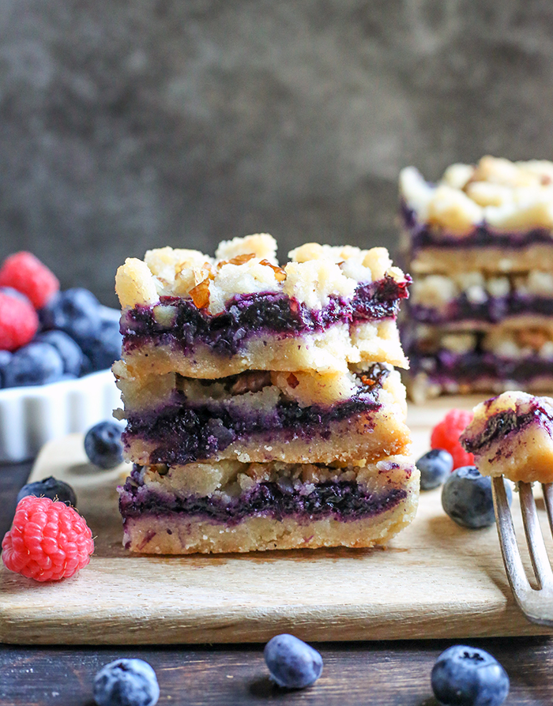

Blueberry Crumbars

Description
It’s blueberry season so that means one thing, we should all be making these Blueberry Crumb Bars! These are a go-to summer treat for me, I’ve been making them for years and everyone always loves them. They’re easy to make and those fresh blueberries just make them so unbelievably delicious!
Ingredients
- 1 cup white sugar
- 1 teaspoon baking powder
- 3 cups all-purpose flour
- 1 cup shortening
- 1 egg
- ¼ teaspoon salt (Optional)
- 1 pinch ground cinnamon (Optional)
- 4 cups fresh blueberries
- ½ cup white sugar
- 3 teaspoons cornstarch
Steps
- Preheat the oven to 375 degrees F (190 degrees C). Grease a 9x13 inch pan.
- In a medium bowl, stir together 1 cup sugar, 3 cups flour, and baking powder. Mix in salt and cinnamon, if desired. Use a fork or pastry cutter to blend in the shortening and egg. Dough will be crumbly. Pat half of dough into the prepared pan.
- In another bowl, stir together the sugar and cornstarch. Gently mix in the blueberries. Sprinkle the blueberry mixture evenly over the crust. Crumble remaining dough over the berry layer.
- Bake in preheated oven for 45 minutes, or until top is slightly brown. Cool completely before cutting into squares.